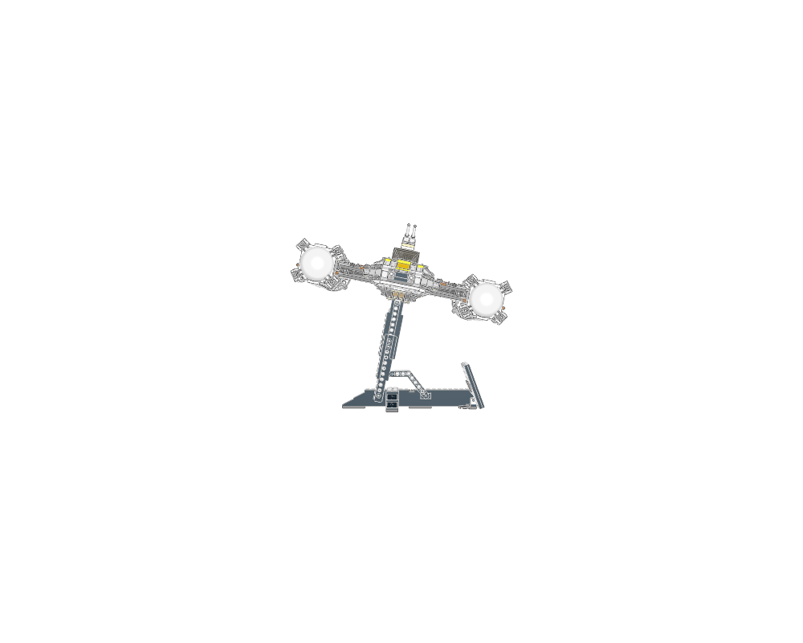
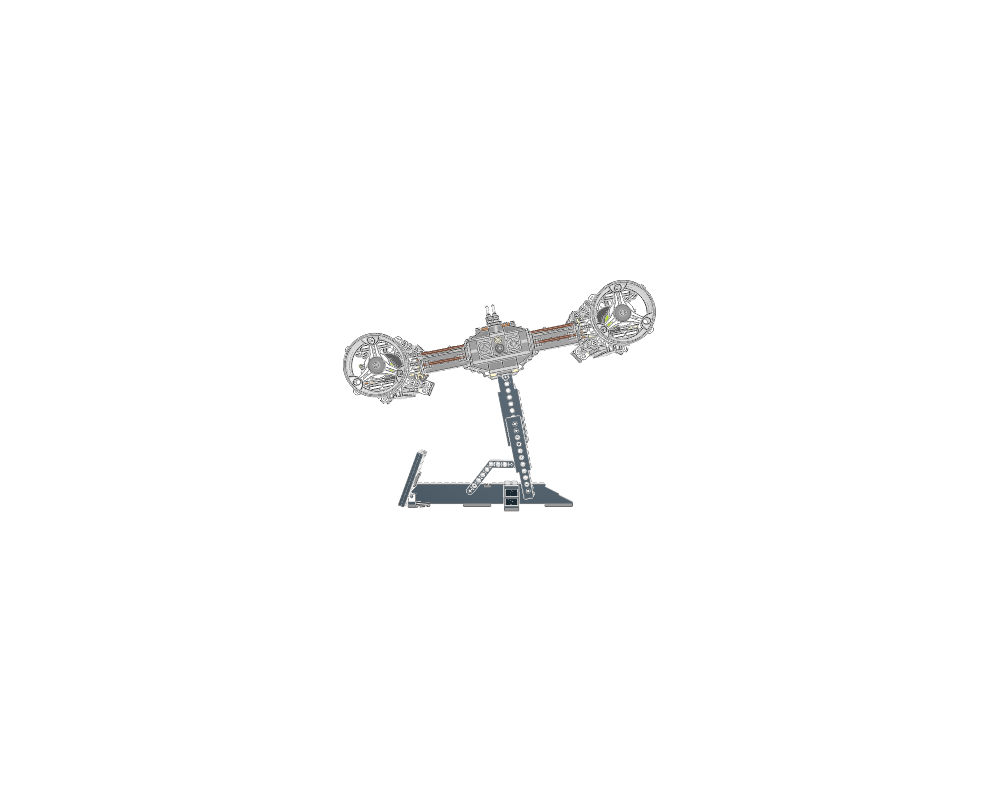
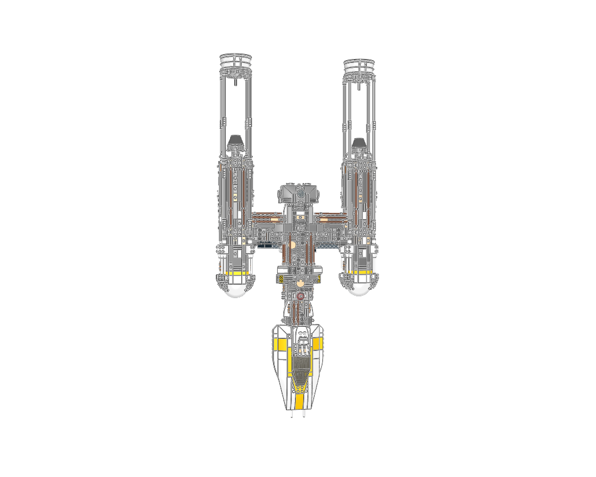

Use a long spine and paired nacelles to create an immediately readable heavy starfighter.
construction
Study the rounded forward cockpit, exposed machinery, outriggers and repeated engine ribs against quieter hull surfaces.
interfaces
Engine outriggers and display stand need their own support study before reuse.
parent context
This is a whole-set reference including its stand; source geometry diagnostics are retained.
reuse notes
Inspiration only: repair or rebuild selected modules before using them. The greebled machinery and curved/angled assemblies need more than a matching BOM.
home

front

back

top
Sections to study separately
Use manual prepare on a selected source section to create its build pages.